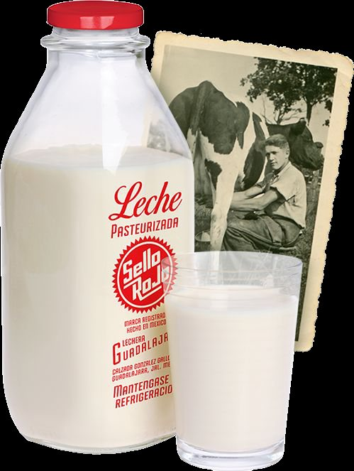
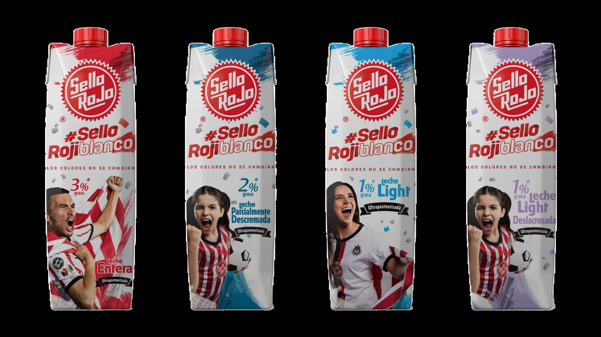

El contexto
Sello Rojo es una marca de leche y productos comestibles de Jalisco, con más de 50 años alimentando a generaciones de mexicanos.
Es ampliamente reconocida en Jalisco y el bajío, pero era desconocida en el centro y el norte del país — justo a donde pronto iniciaría su expansión.

El reto
Llevar una marca con trayectoria pero desconocida a consumidores de otras regiones, dejando claro su origen mexicano y jalisciense — región emblema de los íconos culturales del país: el tequila, el mariachi.
Con la leche, Sello Rojo quería crear brand power para, a futuro, llevar su catálogo de más de 100 productos al resto del país.

La idea
Decidimos apostar por patrocinar al equipo con mayor número de aficionados del país, reconocido por la tradición de siempre jugar con mexicanos.
Un territorio que conectaba con el ADN jalisciense de la marca y con un sentimiento nacional.
«Los colores no se cambian.»
Film de campaña · #SelloRojiblanco.
#SelloRojiblanco · Patrocinio deportivo.